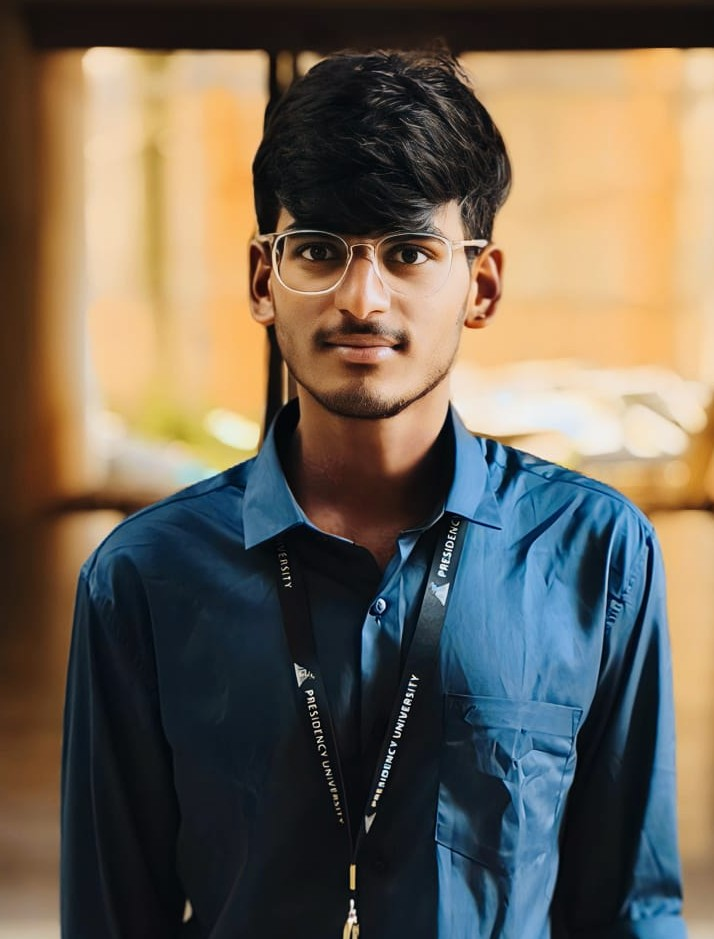

Hi, I'm
B.Tech ECE-VLSI Student & Embedded Systems Enthusiast
Presidency University, Bangalore | GPA: 8.38 / 10

I'm a motivated B.Tech student specializing in Electronics and Communication Engineering (VLSI) at Presidency University, Bangalore. I have a strong foundation in digital electronics and embedded systems, with hands-on experience in Arduino, ESP32-CAM, and SystemVerilog.
I'm passionate about solving real-world industrial problems — from building FPGA-based pipeline monitoring systems to autonomous drone spraying systems.
Designed a hardware pressure monitoring system in SystemVerilog using a 3-state FSM targeting FPGA deployment for oil and gas pipeline safety.
Real-time traffic density estimation using ESP32-CAM that dynamically optimizes signal timing based on congestion levels.
Autonomous drone-based spraying system using soil moisture sensors and GPS for precision zone-based spraying.
Presidency University, School of Engineering — Bangalore
GPA: 8.38 / 10Sri Medha V Jr College — Telangana State Board
95.8%Traffic Density Optimization using ESP32-CAM & Embedded C
Autonomous drone spraying system for agricultural IoT automation
Strengthened industry-relevant technical and professional foundations
I'm always open to new opportunities, collaborations, or just a good tech conversation.